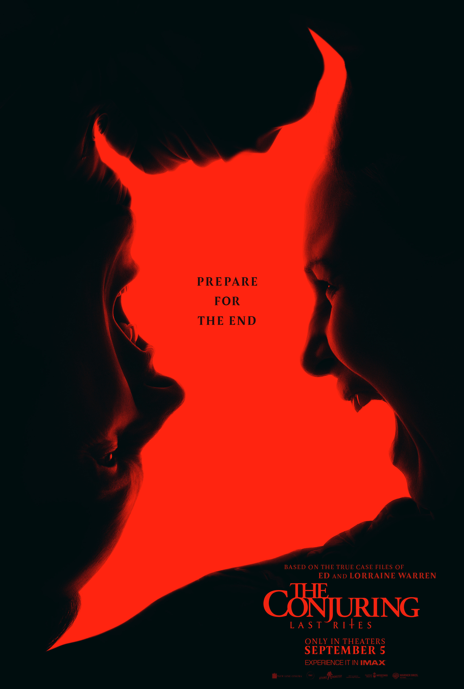

Interstellar
Interstellar is a 2014 epic science-fiction film directed by Christopher Nolan, who co-wrote the screenplay with his brother Jonathan Nolan. It features an ensemble cast led by Matthew McConaughey, Anne Hathaway, Jessica Chastain, Bill Irwin, Ellen Burstyn, and Michael Caine. Set in a dystopian future where Earth is suffering from catastrophic blight and famine, the film follows a group of astronauts who travel through a wormhole near Saturn in search of a new home for mankind.
Company Credits:Syncopy, Lynda Obst Productions
Running Time: 169 min
Release Date: November 7th, 2014
Rating: PG-13
Genre: Adventure, Drama, Sci-Fi
The Conjuring Last Rites
The Conjuring: Last Rites is a 2025 American supernatural horror film directed by Michael Chaves and written by Ian Goldberg, Richard Naing, and David Leslie Johnson-McGoldrick. The film is the ninth in The Conjuring film series, and is based on the real-life investigations of the Smurl haunting case.[6] It stars Patrick Wilson and Vera Farmiga, who reprise their roles as paranormal investigators Ed and Lorraine Warren, along with Mia Tomlinson and Ben Hardy.
Company Credits:New Line Cinema, Atomic Monster, The Safran Company
Running Time:135 min
Release Date:September 5th, 2025
Raiting: R
Genre:Horror, Myster, Thriller